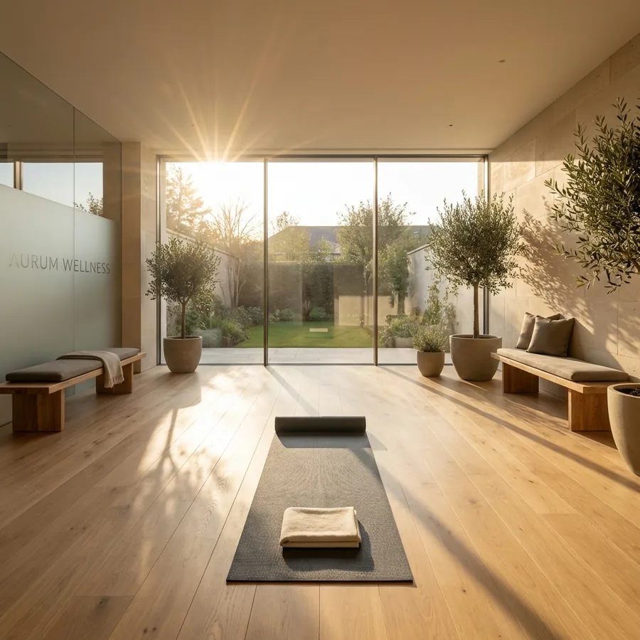
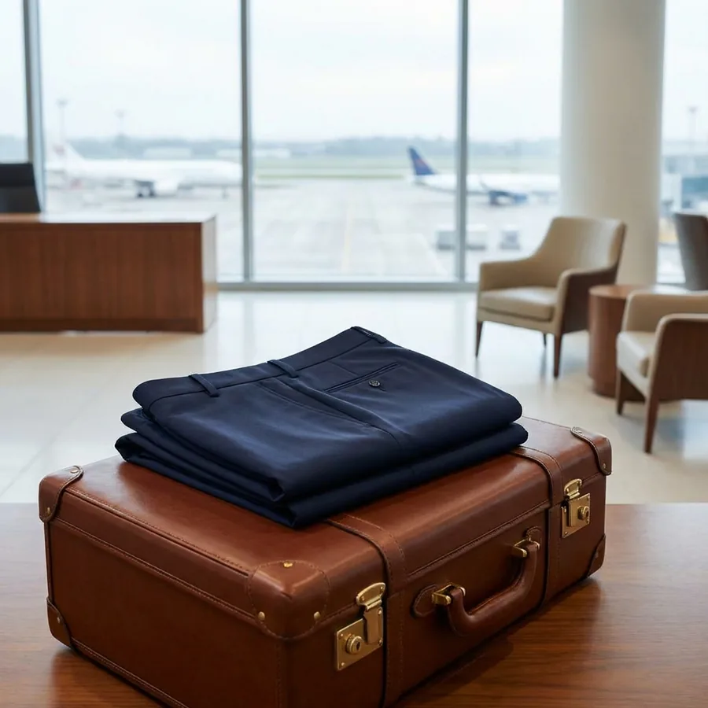
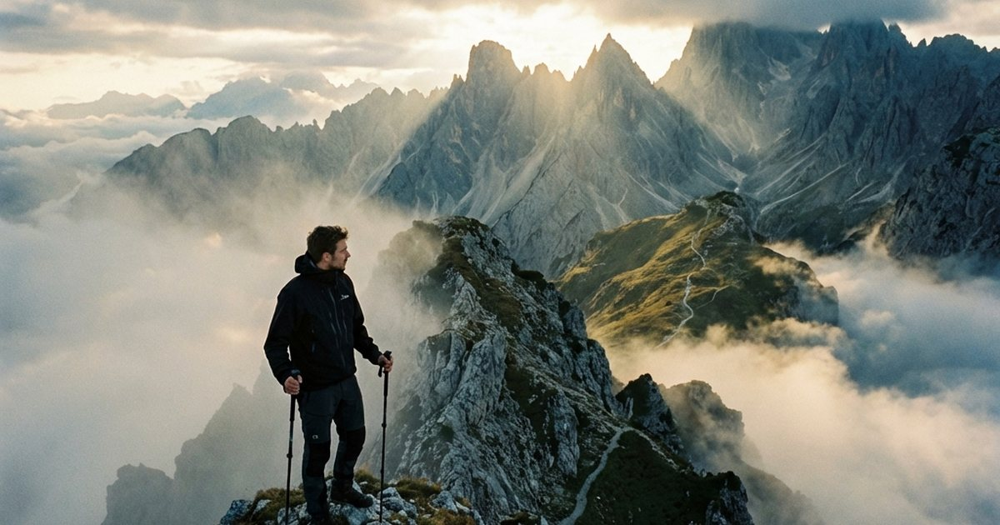
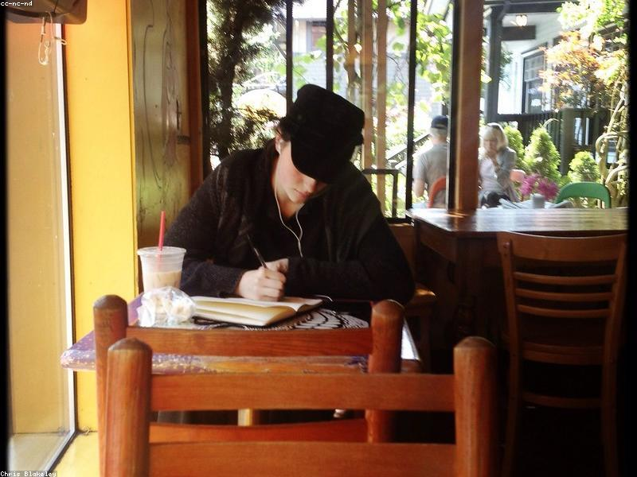
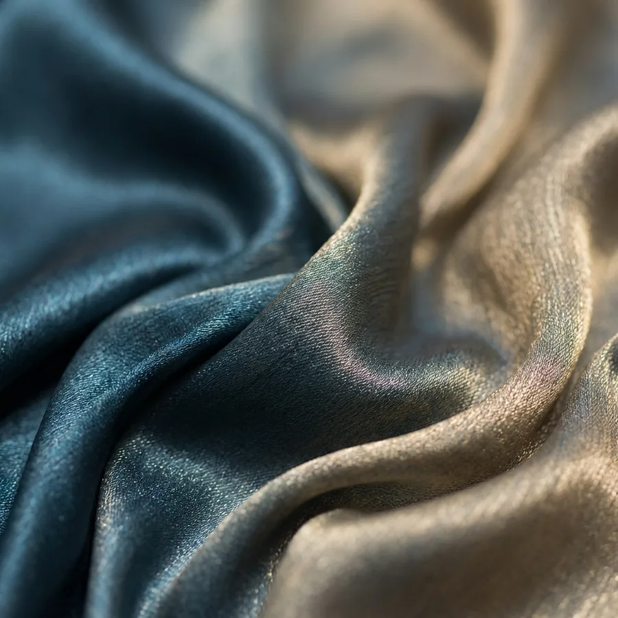

春夏健康恢復與身體降溫
從夜間熱感、睡眠、肌力、步行到旅行疲勞，先把身體恢復放回春夏日常。
閱讀主題 →每個入口都對應一組明確讀者任務，後續新文會逐步補齊。

從夜間熱感、睡眠、肌力、步行到旅行疲勞，先把身體恢復放回春夏日常。
閱讀主題 →
少帶但不狼狽，兼顧溫差、久坐、城市散步與拍照體面感。
閱讀主題 →
把安全感、體力安排、住宿與移動備援先設計好，旅行就不必靠硬撐。
閱讀主題 →
離婚、未婚、喪偶、空巢後的生活秩序、界線與社交節奏，從可控的小步開始。
閱讀主題 →
不從工具名詞開始，而是從回信、整理、排程、簡報與判斷力開始。
閱讀主題 →
顏色、材質、輪廓與配件都要回到台灣氣候、熟齡比例與日常場景。
閱讀主題 →